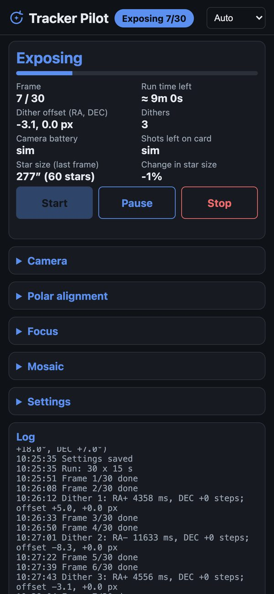
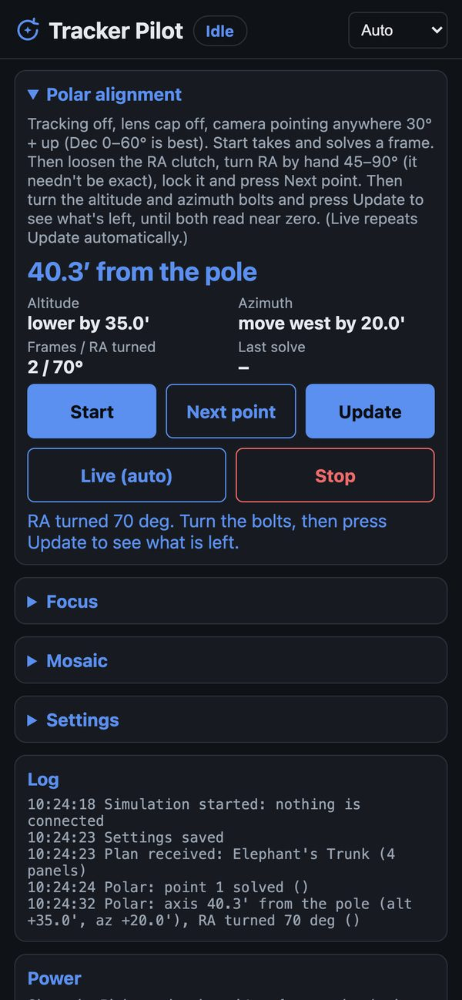
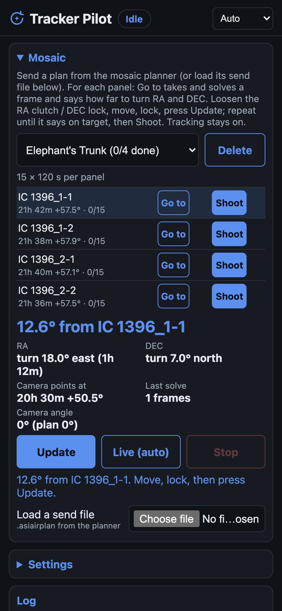

Dithering, polar alignment and mosaics
for your star tracker.
A small Raspberry Pi at the mount runs your Canon, dithers between frames through the tracker's ST-4 port, plate-solves for polar alignment, and points you at each panel of a mosaic. You run it from your phone. No laptop in the field.
Free and open source (MIT). About £35 of parts with a Pi Zero 2 W. An early release: built from a working rig, and reports from other mounts and cameras are welcome.
How it connects: the phone talks to the Pi over WiFi, at home or on the Pi's own network in the field.
Why it's useful
Dithering on a tracker
A bounded random pattern through ST-4 guide pulses, between frames, never while the shutter is open. RA on any tracker; DEC too with an ST-4 DEC mount or a small motor.
Plate-solved polar alignment
Two frames with a turn of RA between them, then live updates while you turn the altitude and azimuth bolts.
Mosaics with push-to
Send a plan from the ASIAIR Mosaic Planner. For each panel it solves where the camera points, tells you how far to turn, then shoots the panel's frames.
The camera from your phone
Bulb runs of any length, ISO, aperture and format, and auto focus with a Canon STM lens, with a star-size watch that warns or refocuses during a run.
Made for the field
Away from home WiFi the Pi makes its own network, and it takes its clock from your phone so plate solving works anywhere.
Part of a multi-rig night
A cheap extra rig next to your ASIAIRs: Astro Rig Monitor watches it, and warns about cloud and focus drift.
On your phone
The Pi serves its own page: open it in your phone's browser, at home or on the Pi's own WiFi in the field.

A run: frames, dithers and star size, with the log of every dither.

Polar alignment: how far off, and which way to turn each bolt.

A mosaic from the planner: how far to turn to reach each panel, then Shoot.
Screenshots from its simulator (a fake camera, mount and stars, so the camera battery reads "sim").
What it works with
| Mounts | Any tracker with an ST-4 guide port: Sky-Watcher Star Adventurer 2i and GTi, iOptron SkyGuider Pro and similar. |
| Cameras | Canon EOS over USB (developed on an EOS 60D). Other makes aren't supported yet. |
| Lenses | For plate solving, about 24–85 mm on APS-C or 35–135 mm on full frame. |
| Computer | Raspberry Pi Zero 2 W, or a Pi 3, 4 or 5, on Raspberry Pi OS Lite. |
DEC dithering: three ways
| None (default) | For trackers that guide only RA (Star Adventurer 2i, SkyGuider Pro): RA dithers. |
| ST-4 port | For mounts that guide DEC too (Star Adventurer GTi): RA and DEC, with two more optocouplers. |
| Stepper motor | For a manual DEC axis: a small motor and belt on its slow-motion gives RA and DEC. |
Getting started
Make the ST-4 lead
Two PC817 optocouplers and resistors between the Pi and an ST-4 cable, so the Pi and the mount share nothing electrically. Parts list and wiring.
Install it on the Pi
Put Raspberry Pi OS Lite (64-bit) on a card with your home WiFi and SSH, then run the one-line installer below.
Set it up from your phone
Open http://tracker.local (your Pi's name) and enter the focal length, the camera's pixel size and width, the guide rate, the DEC drive and your location.
First night
Camera on B, lens on MF. Polar align with the Polar alignment card, focus, then press Start, or load a mosaic.
curl -fsSL https://raw.githubusercontent.com/dgsgc/tracker-pilot/main/install.sh | shRunning the installer again updates it and keeps your settings. Want to try it first? It has a simulator with a fake camera, mount and stars: see Try it without hardware.